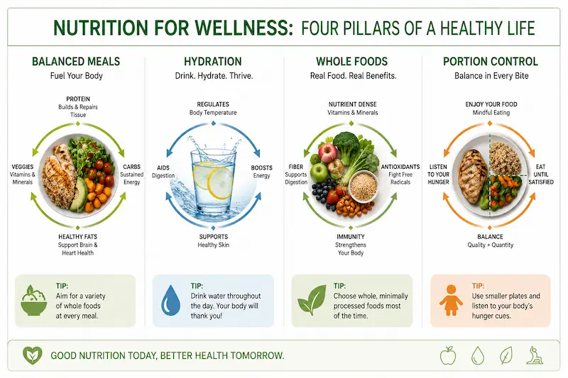

Motivation and Confidence
Staying motivated is an important part of a successful wellness journey. Healthy habits take time, consistency, and encouragement.

Motivation can come from support systems, personal goals, progress tracking, and healthy daily routines. Staying active and celebrating small improvements can help people continue moving forward.